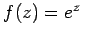
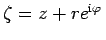

Inhalt Index DeskTop Bronstein

 Funktionentheorie Berechnung reeller Integrale durch Integration im Komplexen
Funktionentheorie Berechnung reeller Integrale durch Integration im Komplexen


Mit Hilfe der CAUCHYschen Integralformel
kann man die Werte einiger bestimmter Integrale bestimmen.
| Beispiel |
|
Die Funktion , die in der gesamten z-Ebene analytisch ist, wird gemäß CAUCHYscher Integralformel (14.56) dargestellt, wobei der Integrationsweg K ein Kreis mit dem Mittelpunkt in z und dem Radius r sein soll. Die Kreisgleichung lautet . Man erhält gemäß (14.56) |